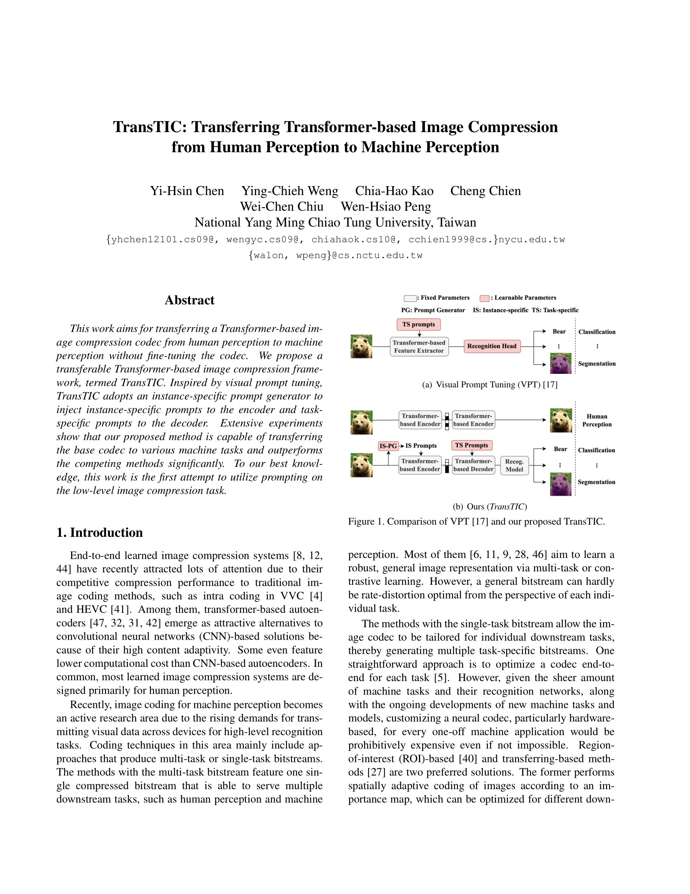
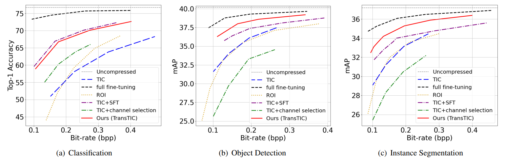

<!DOCTYPE html>
<html lang="en">

<head>
  <meta http-equiv="content-type" content="text/html; charset=UTF-8">
  <meta charset="utf-8">
  <meta http-equiv="X-UA-Compatible" content="IE=edge">
  <meta name="viewport" content="width=device-width, initial-scale=1">
  <title>TransTIC: Transferring Transformer-based Image Compression from Human Perception to Machine Perception</title>
  <script type="text/javascript" src="assets/latexit.js"></script>
  <script type="text/javascript">
    LatexIT.add('p', true);
  </script>

  <!-- CSS includes -->
  <link href="assets/bootstrap.css" rel="stylesheet">
  <link href="assets/css.css" rel="stylesheet" type="text/css">
  <link href="assets/mystyle.css" rel="stylesheet">
  <link href="assets/lightbox2-2.11.3/dist/css/lightbox.css" rel="stylesheet" />

</head>

<body>

  <div id="header" class="container-fluid">
    <div class="row">
      <h1>TransTIC: Transferring Transformer-based Image Compression<br />  from Human Perception to Machine Perception</h1>
      <div class="authors">
        Yi-Hsin Chen, Ying-Chieh Weng, Chia-Hao Kao, Cheng Chien, Wei-Chen Chiu, Wen-Hsiao Peng
      </div>
      <div class="conference">
        ICCV 2023
        <span style="display:inline-block; width: 5px;"></span>
        <a href="https://arxiv.org/abs/2306.05085" target="_blank"></a>
        <!-- <span style="display:inline-block; width: 1px;"></span> -->
        <a href="https://github.com/NYCU-MAPL/TransTIC" target="_blank"></a>
      </div>
    </div>

    <!-- <div class="row">
      <div class="col-sm-3">
      </div>
      <div class="col-sm-3">
          <a href="https://github.com/NYCU-MAPL/TransTIC" target="_blank"><p style="text-align: center;">
          
          <br/>
          Code (Github)
      </p></a></div>
      <div class="col-sm-3">
          <a href="https://arxiv.org/abs/2306.05085" target="_blank"><p style="text-align: center;">
          
          <br/>
          Paper (arXiv)
      </p></a></div>
      <div class="col-sm-3">
      </div>
  </div>
  <a href="" target="_blank">
      <div class="thumbs">
      </div>
  </a> -->

    <p style="text-align:center;">
      <a href="https://en.nycu.edu.tw/" target="_blank"></a>
       
      <a href="http://mapl.nctu.edu.tw/" target="_blank"></a>
    </p>
  </div>
  <div class="container" id="abstractdiv">
    <h2>Abstract</h2>
    <p>
    This work aims for transferring a Transformer-based image compression codec from human perception to machine
    perception without fine-tuning the codec. We propose a
    transferable Transformer-based image compression framework, termed TransTIC. Inspired by visual prompt tuning,
    TransTIC adopts an instance-specific prompt generator to
    inject instance-specific prompts to the encoder and task-specific prompts to the decoder. Extensive experiments
    show that our proposed method is capable of transferring
    the base codec to various machine tasks and outperforms
    the competing methods significantly. To our best knowledge, this work is the first attempt to utilize prompting on
    the low-level image compression task.
    </p>
  </div>

  <div class="container" id="banner">
    <h2>Method</h2>
    <p style="text-align:center;">
      <a href="assets/architecture.png" data-lightbox="arch"></a>
    </p>
    <br>
    <p>
      The figure illustrates our transferable Transformer-based image compression framework, termed $TransTIC$. It is built
      upon $TIC$, except that the context prior model is replaced
      with a simpler Gaussian prior for entropy coding. As
      shown, the main autoencoder $g_a$, $g_s$ and the hyperprior autoencoder $h_a$, $h_s$ include Swin-Transformer blocks (STB)
      as the basic building blocks. These STB are interwoven
      with convolutional layers to adapt feature resolution in the
      data pipeline. In this work, the main and hyperprior autoencoders are pre-trained for human perception (i.e. the image reconstruction task) and their network weights are fixed
      during the transferring process.
    </p>
    <p>
      To transfer $g_a$, $g_s$ such that the decoded image $\hat{x}$ is suitable for machine perception, we inject (1) instance-specific
      prompts produced by gp into the first two STBs in $g_a$ and (2) task-specific prompts into all the STBs in $g_s$. 
      We note that the prompt generator $g_p$ and the
      task-specific prompts input to the decoder are learnable and
      updated according to the machine perception task. That is,
      the network weights of $g_p$ are task-specific. However, the
      prompts produced by $g_p$ are instance-specific because they
      are dependent on the input image.
    </p>
    </div>
      
    <div class="container" id="paperdiv">
      <h2>Paper</h2>
      <a href="assets/paper.pdf"
        download="TransTIC: Transferring Transformer-based Image Compression from Human Perception to Machine Perception.pdf">
        <div class="thumbs">
      
      
      
      
      
      
      
      
      
      
      
      
      
      
      
      
      
      
    </div>
    </a>

    <div class="container" id="exp_results">
      <h2>Rate-distortion Results</h2>
      <p>
        The rate-accuracy plots for the competing methods. The methods are evaluated on three machine tasks: classification, object detection, and instance segmentation. For classification, we use ImageNet-val
         as the test set and a pre-trained ResNet50 as the downstream recognition network. For object detection and instance segmentation, we test the competing methods on COCO2017-val using a pre-trained Faster R-CNN and Mask R-CNN as the downstream recognition networks, respectively.
      </p>

      <div id="exp1">
        <div class="col-md-6 vcenter">
          <p style="text-align:center;">
            <a href="assets/results/rd.png" data-lightbox="Exp1"></a>
          </p>
        </div>
      </div>
      <div class="col-md-12">
        <hr>
      </div>
      <p>
        We also compare our TransTIC with the methods recently submitted to the call-for-proposals (CFP) 
        competition of the MPEG VCM standard based on their test protocol. 
        The results of these competing methods are from
        the CFP test report (m61010). As shown in Fig. B1, our
        TransTIC performs comparably to the top performers in
        terms of rate-accuracy performance. However, our base
        codec has the additional constraint that it is optimized for
        human perception, while the top performers (e.g. p12, p6,
        p7) optimize the entire codec end-to-end for machine tasks.
        This shows the potential of our TransTIC.
      </p>

      <div id="exp2">
        <div class="row">
          <!-- <p style="text-align:center;">
            <a href="assets/results/rd2SOTA.png" data-lightbox="Exp2"></a>
          </p> -->
          <p style="text-align:center;">
            <a href="assets/results/rd2SOTA_detection.png" data-lightbox="Exp2"></a>
          <!-- </p> -->
          <!-- <p style="text-align:center;"> -->
            <a href="assets/results/rd2SOTA_segmentation.png" data-lightbox="Exp2"></a>
          </p>
        </div>
      </div>
    </div>

    <div class="container" id="Visualization">
      <h2>Qualitative Comparison</h2>
      <p>
        Decoded images and the bit allocation maps produced by the competing methods. As shown, $TIC$, the codec optimized for human perception,
         tends to allocate more bits to complex regions, even if those regions are less relevant (e.g. background) to the downstream recognition tasks. 
         In contrast, the other methods, which target machine perception, attempt to shift coding bits from the background regions to the foreground objects.
      </p>
      <!-- <div class="col-md-6 text-center">
        <p style="text-align:center;">
        <h3>Classification</h3>
        </p>
      </div>
      <div class="col-md-6 text-center">
        <p style="text-align:center;">
        <h3></h3>
        </p>
      </div> -->

      <div id="exp1">
        <div class="col-md-6 vcenter">
          <p style="text-align:center;">
            <a href="assets/results/dog.png" data-lightbox="Exp1"></a>
              <a href="assets/results/dog2.png" data-lightbox="Exp1"></a>
            <a href="assets/results/bird.png" data-lightbox="Exp1"></a>
          </p>
        </div>
      </div>
      <div class="col-md-12">
        <hr>
      </div>
      <div id="exp2">
        <div class="col-md-6 vcenter">
          <p style="text-align:center;">
            <a href="assets/results/ski.png" data-lightbox="Exp2"></a>
            <a href="assets/results/kids.png" data-lightbox="Exp2"></a>
            <a href="assets/results/baseball.png" data-lightbox="Exp2"></a>
          </p>
        </div>
      </div>
      <div class="col-md-12">
        <hr>
      </div>
      <div id="exp3">
        <div class="col-md-6 vcenter">
          <p style="text-align:center;">
            <a href="assets/results/ski2.png" data-lightbox="Exp3"></a>
            <a href="assets/results/kids2.png" data-lightbox="Exp3"></a>
          </p>
        </div>
      </div>

    </div>

    <div id=footer><br></div>
    <!-- Javascript includes -->
    <script src="assets/jquery-1.js"></script>
    <script src="assets/bootstrap.js"></script>
    <script src="assets/lightbox2-2.11.3/dist/js/lightbox.js"></script>


</body>

</html>